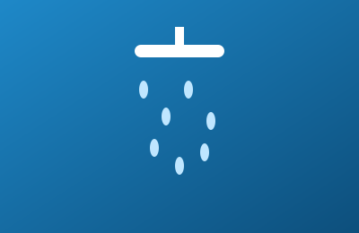
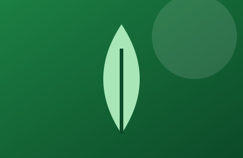
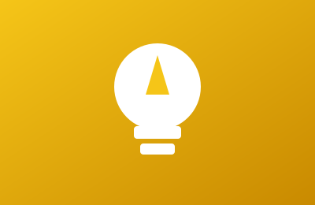
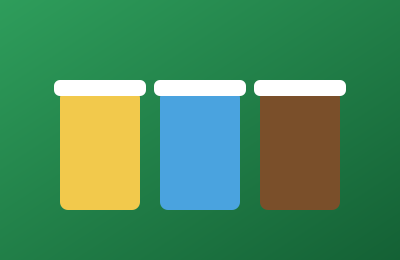
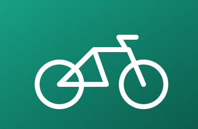
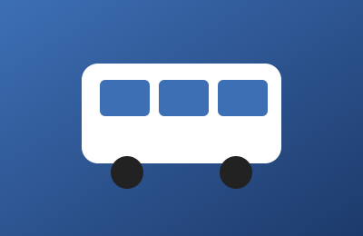

Eau
Douches courtes, fuites réparées : chaque goutte économisée compte.
Adoptez des éco-gestes, suivez votre progression et mesurez votre empreinte carbone.
Découvrir l'association
EcoTunisie est une association citoyenne qui aide les jeunes à passer à l'action. Économiser l'eau, réduire les déchets, consommer moins d'énergie, mieux se déplacer : les petits gestes du quotidien comptent.
Notre site rend l'écologie concrète, motivante et mesurable : choisissez vos éco-gestes, relevez un défi chaque semaine et calculez votre empreinte carbone mensuelle.

Douches courtes, fuites réparées : chaque goutte économisée compte.

Ampoules LED, appareils éteints : moins de kWh, moins de CO₂.

Trier, composter, réutiliser : donnez une seconde vie à vos déchets.

Vélo, bus ou marche : bougez autrement pour polluer moins.
Valeurs indicatives, données à des fins pédagogiques uniquement.

| Comparaison | |||
|---|---|---|---|
| Catégorie | Mode | Émissions (g par km) | Remarque |
| Transports collectifs | Bus | 70 | Efficace quand il est bien rempli |
| Train | 30 | Un des modes motorisés les plus sobres | |
| Transport individuel | Voiture | 190 | Émissions partagées si l'on covoiture |
| Mobilité douce | Vélo ou marche | 0 | Aucune émission directe, bon pour la santé |